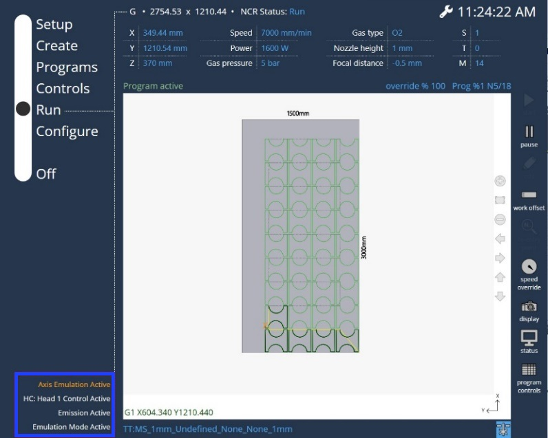

Preparazione
Accensione della macchina
Sblocco del pulsante ARRESTO DI EMERGENZA
I pulsanti ARRESTO DI EMERGENZA si trovano sul pannello di controllo della macchina laser e sul montante di sicurezza del cambiapalette.
Per rilasciare il pulsante ARRESTO DI EMERGENZA, premerlo e ruotarlo in senso orario.
Chiusura della porta
La macchina può essere avviata solo quando l’interruttore porta è bloccato. Se il pulsante porta non si accende in modo fisso, controllare l’allineamento dell’interruttore porta.
Azzeramento asse
All’accensione della macchina, gli assi devono essere azzerati. Questo viene fatto premendo il tasto HOME → tasto Automatico nell’interfaccia HMI. Gli assi vengono quindi spostati nel punto di riferimento.
Calibratura del controllo altezza, centraggio dell’ugello
È importante che il controllo altezza venga calibrato dopo la messa in funzione e ogni volta che la configurazione della macchina viene modificata. Una macchina calibrata con precisione garantisce una maggiore qualità del taglio e riduce le collisioni, cosa che migliora la durata dei componenti.
Fare riferimento alle rispettive sezioni nelle istruzioni per l’esercizio.
Cancellazione dei messaggi d’errore
Ogni volta che c’è una comunicazione dal PLC, l’utente può vedere i messaggi visualizzati nell’angolo in basso a sinistra.

Spegnimento della macchina
Spegnere l’HMI prima di disattivare l’alimentazione elettrica del sistema per evitare una possibile perdita di dati.